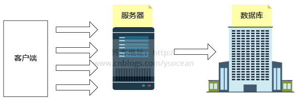
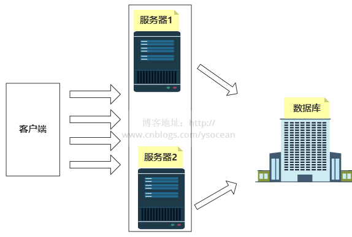
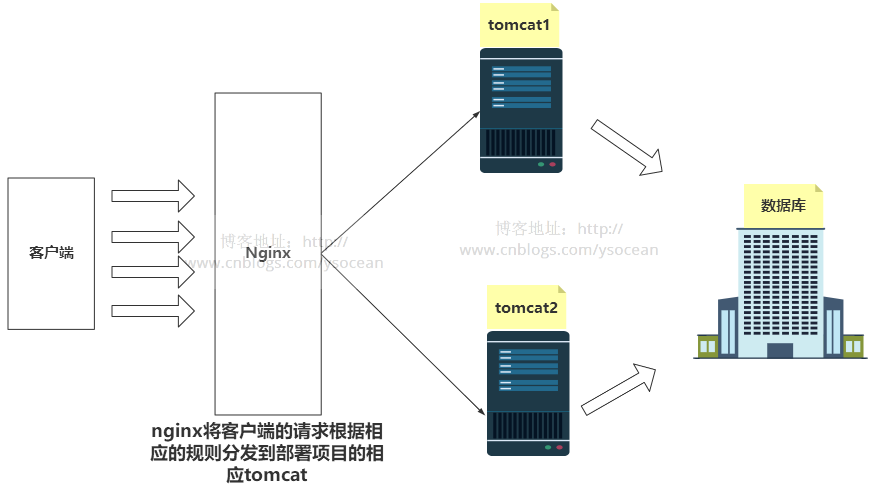
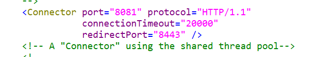
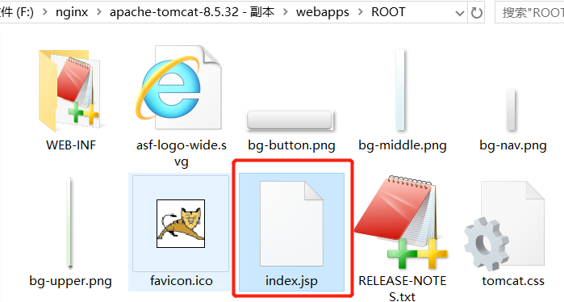
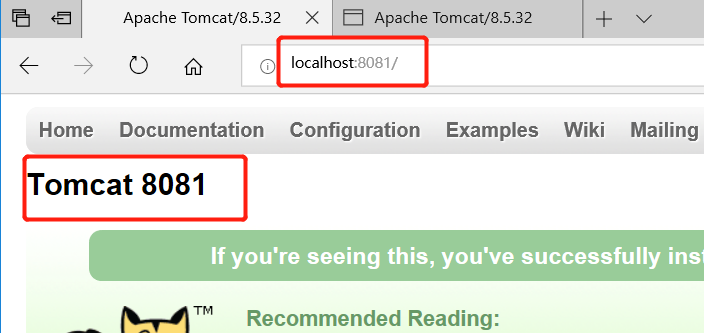
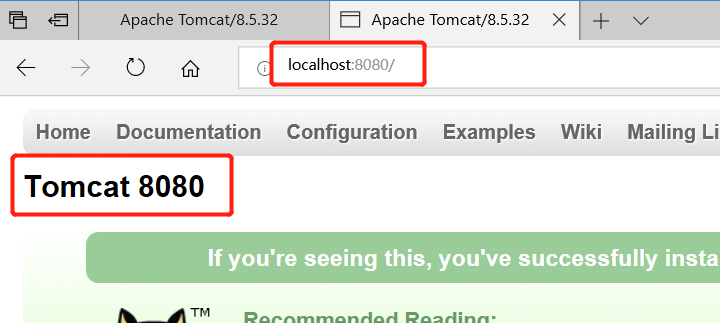
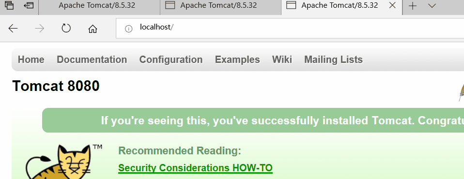
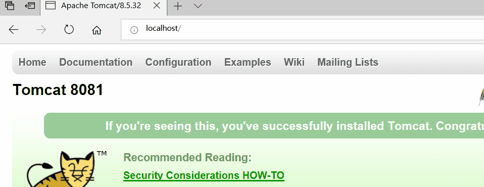

Nginx-负载均衡
负载均衡的由来
早期的系统架构，基本上都是如下形式的：

客户端发送多个请求到服务器，服务器处理请求，有一些可能要与数据库进行交互，服务器处理完毕后，再将结果返回给客户端。
这种架构模式对于早期的系统相对单一，并发请求相对较少的情况下是比较适合的，成本也低。但是随着信息数量的不断增长，访问量和数据量的飞速增长，以及系统业务的复杂度增加，这种架构会造成服务器相应客户端的请求日益缓慢，并发量特别大的时候，还容易造成服务器直接崩溃。很明显这是由于服务器性能的瓶颈造成的问题，那么如何解决这种情况呢？
我们首先想到的可能是升级服务器的配置，比如提高CPU执行频率，加大内存等提高机器的物理性能来解决此问题，但是我们知道摩尔定律的日益失效，硬件的性能提升已经不能满足日益提升的需求了。最明显的一个例子，天猫双十一当天，某个热销商品的瞬时访问量是极其庞大的，那么类似上面的系统架构，将机器都增加到现有的顶级物理配置，都是不能够满足需求的。那么怎么办呢？
上面的分析我们去掉了增加服务器物理配置来解决问题的办法，也就是说纵向解决问题的办法行不通了，那么横向增加服务器的数量呢？这时候集群的概念产生了，单个服务器解决不了，我们增加服务器的数量，然后将请求分发到各个服务器上，将原先请求集中到单个服务器上的情况改为将请求分发到多个服务器上，将负载分发到不同的服务器，也就是我们所说的负载均衡

负载均衡完美的解决了单个服务器硬件性能瓶颈的问题，但是随着而来的如何实现负载均衡呢？客户端怎么知道要将请求发送到那个服务器去处理呢？
Nginx实现负载均衡
Nginx 服务器是介于客户端和服务器之间的中介，通过上一篇博客讲解的反向代理的功能，客户端发送的请求先经过 Nginx ，然后通过 Nginx 将请求根据相应的规则分发到相应的服务器。

主要配置指令为上一讲的 pass_proxy 指令以及 upstream 指令。负载均衡主要通过专门的硬件设备或者软件算法实现。通过硬件设备实现的负载均衡效果好、效率高、性能稳定，但是成本较高。而通过软件实现的负载均衡主要依赖于均衡算法的选择和程序的健壮性。均衡算法又主要分为两大类：
- 静态负载均衡算法：主要包括轮询算法、基于比率的加权轮询算法或者基于优先级的加权轮询算法。
- 动态负载均衡算法：主要包括基于任务量的最少连接优化算法、基于性能的最快响应优先算法、预测算法及动态性能分配算法等。
静态负载均衡算法在一般网络环境下也能表现的比较好，动态负载均衡算法更加适用于复杂的网络环境。
例子：
①、普通轮询算法
这是Nginx 默认的轮询算法。
例子：两台相同的Tomcat服务器，通过 localhost:8080 访问Tomcat1，通过 localhost:8081访问Tomcat2，现在我们要输入 localhost 这个地址，可以在这两个Tomcat服务器之间进行交替访问。
一、分别修改两个Tomcat服务器的端口为8080和8081。然后再修改Tomcat的首页，使得访问这两个页面时能够区分。如下：
修改端口号文件为 server.xml ：

修改首页的路径为：webapps/ROOT/index.jsp

修改完成之后，分别启动这两个Tomcat服务器，然后分别输入相应的地址端口号：
输入地址：localhost:8081

输入地址：localhost:8080

二、修改 nginx 的配置文件 nginx.conf
|
|
三、启动 nginx。然后在浏览器输入localhost 地址，观看页面变化：

②、基于比例加权轮询
上述两台Tomcat服务器基本上是交替进行访问的。但是这里我们有个需求：
由于Tomcat1服务器的配置更高点，我们希望该服务器接受更多的请求，而 Tomcat2 服务器配置低，希望其处理相对较少的请求。
那么这时候就用到了加权轮询机制了。
nginx.conf 配置文件如下：
其实对比上面不加权的轮询方式，这里在 upstream 指令中多了一个 weight 指令。该指令用于配置前面请求处理的权重，默认值为 1。
也就是说：第一种不加权的普通轮询，其实其加权值 weight 都为 1。
下面我们看页面相应结果：

明显 8080 端口号出现的次数更多，试验的次数越多越接近我们配置的比例。
③、基于IP路由负载
我们知道一个请求在经过一个服务器处理时，服务器会保存相关的会话信息，比如session，但是该请求如果第一个服务器没处理完，通过nginx轮询到第二个服务器上，那么这个服务器是没有会话信息的。
最典型的一个例子：用户第一次进入一个系统是需要进行登录身份验证的，首先将请求跳转到Tomcat1服务器进行处理，登录信息是保存在Tomcat1 上的，这时候需要进行别的操作，那么可能会将请求轮询到第二个Tomcat2上，那么由于Tomcat2 没有保存会话信息，会以为该用户没有登录，然后继续登录一次，如果有多个服务器，每次第一次访问都要进行登录，这显然是很影响用户体验的。
这里产生的一个问题也就是集群环境下的 session 共享，如何解决这个问题？
通常由两种方法：
1、第一种方法是选择一个中间件，将登录信息保存在一个中间件上，这个中间件可以为 Redis 这样的数据库。那么第一次登录，我们将session 信息保存在 Redis 中，跳转到第二个服务器时，我们可以先去Redis上查询是否有登录信息，如果有，就能直接进行登录之后的操作了，而不用进行重复登录。
2、第二种方法是根据客户端的IP地址划分，每次都将同一个 IP 地址发送的请求都分发到同一个 Tomcat 服务器，那么也不会存在 session 共享的问题。
而 nginx 的基于 IP 路由负载的机制就是上诉第二种形式。大概配置如下：
|
|
注意：我们在 upstream 指令块中增加了 ip_hash 指令。该指令就是告诉 nginx 服务器，同一个 IP 地址客户端发送的请求都将分发到同一个 Tomcat 服务器进行处理。
④、基于服务器响应时间负载分配
根据服务器处理请求的时间来进行负载，处理请求越快，也就是响应时间越短的优先分配
|
|
通过增加了 fair 指令。
⑤、对不同域名实现负载均衡
通过配合location 指令块我们还可以实现对不同域名实现负载均衡。
|
|